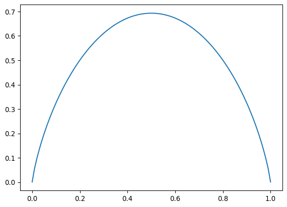
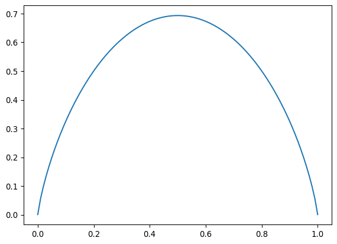

import numpy as np
import matplotlib.pyplot as plt
ps = np.linspace(0.0001, 0.9999, 100)
h = -ps*np.log(ps) - (1 - ps)*np.log(1 - ps)
plt.plot(ps, h)
Esta clase está basada en las siguientes fuentes:
¿Cuánta información se obtiene cuando se sabe que ocurrió un evento de probabilidad \(p\)? \[ -\log p \] La base del logaritmo no es importante; es mera convención. Si uno es físico le gusta el logaritmo natural, si uno es informático le gusta base 2, si uno en cambio es una persona normal le gusta base 10. Pero no es muy importante. Simplemente definimos un “bit de información” como \(\log 2\) en la base dada.
Por ejemplo: Suponga que se tiran tres monedas y se obtiene “cara, sello, cara”. Este evento tiene probabilidad \(1/2^3\) y entonces se obtuvo una cantidad de información igual a \[ -\log\left(\frac{1}{2^3}\right) = 3\log 2 \]
La justificación del enunciado anterior es que queremos que la información sea:
Positiva para \(p > 0\).
Decreciente \(I(p) > I(q)\) para \(p < q\): Si ocurre un evento de baja probabilidad queremos decir que obtuvimos mucha información y vice versa.
Aditiva \(I(pq) = I(p) + I(q)\): La información de la combinación de dos eventos independientes es la suma de las informaciones.
Resulta que la única función que cumple estas tres condiciones es el logaritmo.
Ahora supongamos que tenemos una moneda pesada tal que \(2/3\) de las veces sale cara mientras \(1/3\) de las veces sale sello.
Si sale cara obtuvimos \(-\log 2/3\) de información mientras si sale sello obtuvimos \(-\log 1/3\).
La información promedio obtenida en cada lanzamiento de la moneda es \[ -\frac{2}{3} \log \frac{2}{3} - \frac{1}{3} \log \frac{1}{3}\,. \]
Esta es la entropía de Shannon de este sistema.
En general supongamos que hay \(n\) eventos con probabilidades \(p_1,...,p_n\). La entropía de Shannon es \[ H = -\sum_{i=1}^n p_i\log p_i\,. \]
Resulta que la entropía de Shannon es mayor para distribuciones esparcidas igualmente entre eventos y menor para distribuciones concentradas en pocos eventos.
import numpy as np
import matplotlib.pyplot as plt
ps = np.linspace(0.0001, 0.9999, 100)
h = -ps*np.log(ps) - (1 - ps)*np.log(1 - ps)
plt.plot(ps, h)
Para dos eventos con probabilidades \(p\) y \(1 - p\) la entropía es máxima cuando \(p=1/2\). Es mínima cuando \(p=1\) o \(p=0\) (cuando sabemos todo y no ganamos información con la ocurrencia de un evento).
En general para \(n\) eventos queremos encontrar el mínimo y el máximo de la entropía. Es decir los extremos de \[ H = -\sum_i p_i \log p_i\,, \] sujetos a la condición \(\sum_i p_i = 1\). Para lograrlo fijamos \(p_1 = 1 - \sum_{j = 2}^n p_i\) y calculamos la derivada respecto a \(p_i\) con \(i \neq 1\) \[ \frac{\partial}{\partial p_i} H = -\log p_i - 1 + \log p_1 + 1 = -\log \frac{p_i}{p_1} \] Esto es cero cuando \(\frac{p_i}{p_1} = 1\), es decir cuando todas las probabilidades son iguales \(p_i = 1/n\). De hecho este punto es un máximo.
Esta definición se puede generalizar a una variable continua, hagamos un intento tomando el límite del discreto al continuo. Consideremos partir la recta real en \(n \rightarrow \infty\) intervalos de ancho infinitesimal \(\Delta x\), entonces \[ H = -\sum_{i = 0}^\infty p_i \log p_i \] donde \(p_i =\int_{x_i - \Delta x/2}^{x_i + \Delta} \!\!dx\,\rho(x) \approx \rho(x_i) \Delta x\) es la probabilidad de caer en el i-ésimo intervalo. Entonces \[ H = -\lim_{\Delta x \to 0} \sum_{i=0}^\infty \rho(x_i) \Delta x \log(\rho(x_i) \Delta x) = -\int dx\, \rho(x) \log(\rho(x)) - \lim_{\Delta x \to 0} \int dx\, \rho(x) \log \Delta x\,. \] El segundo término es infinito. Para obtener algo que tenga sentido nos vemos obligados a ignorarlo.
Definimos la entropía de Gibbs como \[ H = -\int dx\, \rho(x) \log \rho(x)\,. \]
Esta entropía tiene el defecto de que puede ser negativa y no es invariante bajo cambios de variables, a diferencia del caso discreto.
La interpretación de esto depende del contexto.
En general es difícil asignar una distribución de probabilidad. Un principio que funciona en mecánica estadística es el de “máxima entropía”. Es decir, basados en la información que tenemos sobre el sistema, escogemos la distribución de probabilidad que maximiza le entropía de Shannon.
Jaynes arguyó que este principio se puede aplicar a otros contextos. Corresponde a admitir la ignorancia. La máxima entropía corresponde a la máxima ignorancia sobre el sistema, es decir corresponde a ganar la cantidad máxima de información en promedio con cada observación.
A partir de este principio se puede deducir la distribución de Boltzmann.
Supongamos que conocemos el promedio de alguna cantidad \(A\). Queremos encontrar la distribución que maximiza la entropía bajo la condición \(\langle A \rangle = \sum_i p_i A_i = c\) fijo.
Si vemos \(\langle A \rangle\) como una función de las variables \(p_i\), queremos maximizar \(H(\mathbf{p})\) en el espacio dado por las coordenadas \((p_1, ..., p_n)\) sobre la superficie \(g(\mathbf{p}) = \sum_i p_i A_i\) constante.
El gradiente \(\nabla g\) siempre es ortogonal a la superficie \(g\) constante.
El gradiente \(\nabla H\) es ortogonal a la superficie \(g\) constante en los puntos donde \(H\) es un mínimo o máximo sobre la superficie. Si no fuera así podríamos movernos en la dirección del gradiente proyectado sobre la superficie y hacer que \(H\) sea un poco más pequeño o grande.
Entonces los dos gradientes son proporcionales en el punto extremo de \(H\), es decir \(\nabla H = \lambda \nabla g\) o en otras palabras tenemos que encontrar \[ \nabla (H - \lambda g) = 0\,. \] Aquí \(\lambda\) se llama un multiplicador de Lagrange.
\[ \nabla_j H = -\nabla_j \sum_i p_i \ln p_i = -\sum_i (1 + \ln p_i) \nabla_j p_i = -\ln \frac{p_j}{p_1}\,, \]
\[ \nabla_j g = \nabla_j \sum_i A_i p_i = \sum_i A_i \nabla_j p_i = A_j - A_1\,, \]
Juntando estas expresiones tenemos
\[ 0 = \ln\frac{p_j}{p_1} + \lambda (A_j - A_1)\,, \]
es decir
\[ \frac{p_i}{p_1} = \frac{e^{-\lambda A_i}}{e^{-\lambda A_1}} \]
Normalizando adecuadamente
\[ p_i = \left(\frac{1}{\sum_{i=1}^n e^{-\lambda A_i}}\right) e^{-\lambda A_i}\,. \]
Shannon era un informático (más apropiadamente un científico de la información) que introdujo su concepto de entropía para demostrar un teorema sobre comunicaciones en redes.
La pregunta es cuánto podemos comprimir la información producida por un computador para enviarla de manera eficiente a otro computador. Todos hemos usado archivos .zip. La pregunta es cuánto podemos comprimir una serie de bits.
Definimos la compresión como un mapa \(C^n\) entre las posibles secuencias \((x_1,...,x_n)\) y una cadena de bits de longitud \(nR\). Entonces la razón de compresión de este mapa es \(R\).
La descompresión del mensjae es un mapa \(D^n\) que toma una cadena de bits de longitud \(nR\) y produce \((x_1,...,x_n)\).
Un mecanismo de compresión y descompresión es confiable si \(D^n(C^n(x)) = x\) con probabilidad \(1\) cuando \(n\) tiende a infinito.
El teorema dice (asumiendo que el logaritmo en la definición de \(H\) es base \(2\))
Teorema del canal sin ruido de Shannon: Suponga que \(X_i\) es una serie de variables i.i.d (independientes e idénticamente distribuidas) sacadas de una distribución discreta de probabilidad con entropía \(H(X)\). Sea \(R > H\), entonces existe un mecanismo de compresión confiable con razón de compresión \(R\). Por el contrario sea \(R < H\), entonces no existe un tal mecanismo confiable.
Lamentablemente no tenemos el tiempo necesario para introducir los conceptos previos necesarios para demostrar este teorema.
Consideremos una fuente que sólo produce la letra “c”. Esta fuente no contiene ninguna información, no necesitamos comprimir nada.
Ahora supongamos que unos días la fuente produce la palabra “azul” y otros días la fuente produce la palabra “rojo”. En este caso podemos representar la palabra “azul” con 0 y la palabra rojo con “1”. De hecho la entropía es \(1\), necesitamos un solo bit.
En el otro extremo, supongamos que la fuente produce una cadena completamente aleatoria de “1” y “0” de longitud \(n\). No tenemos manera de comprimirla si es completamente aleatoria, la entropía es \[ H = -n\sum_{i=0}^1 \frac{1}{2}\log\frac{1}{2} = n\,, \] y necesitamos todos los \(n\) bits. Esta cadena tiene la máxima cantidad de información, no se puede comprimir.
Aquí vemos que la estadística de la fuente es importante, por eso la información está relacionada con la estadísitica.
Ahora pensemos en una fuente que transmite un mensaje en español. Resulta que los 33 caracteres del español no ocurren con igual probabilidad, las vocales son mucho más probables. Igualmente para las palabras, algunas palabras son más comunes. Idem para las parejas de palabras o frases.
Para acercarnos a ese caso, ahora pensemos en una cadena de “0” y “1” tal que el “1” aparece con probabilidad \(0.8\). Una tal cadena es \[ 111101110101111 \] Parecería que no podemos comprimir esta cadena, después de todo para el cero necesitamos el símbolo “0” y para el uno necesitamos el símbolo “1”. Esto parecería contradecir la intuición que hemos construído de entropía \[ H = -n\left(0.8\log 0.8 + 0.2 \log 0.2\right) \approx 0.5\,. \] Pero en realidad podemos tomar cadenas de caracteres, por ejemplo de cinco caracteres. Las cinco cadenas “11110”, “11101”, “11011”, “10111”, “01111” ocurren con mucha más frecuencia que las otras, tal que podemos usar un par de bits para representarlas en vez de cinco. Jugando de esta manera nos podemos acercar a comprimir esos mensajes por un \(50\%\).
Ahora supongamos que tenemos un alfabeto de 8 caracteres que queremos comprimir, llamémoslos \(\{1,2,3,4,5,6,7,8\}\). De forma ingenua podemos representar cada caracter con 3 bits. ¿Podemos comprimirlo?
Si los 8 caracteres ocurren con igual probabilidad \(1/8\) no podemos hacer mucho \[ H = -n\sum \frac{1}{8}\log\frac{1}{8} = n\log 8 = 3n\,. \] Es decir, necesitamos \(3n\) bits para representar un mensaje de longitud \(n\).
Pero si ocurren con probabilidad diferente, podemos hacer algo mejor. Supongamos que las probabilidades son \[ \{p_1 = 0.5, p_2 = 0.3, p_3 = 0.1, p_4 = 0.05, p_5 = 0.025, p_6 = 0.0125, p_7 = 0.0065, p_8 = 0.006\}\,. \] Entonces un esquema debido a Fano consiste en:
La entropía es
-0.5*np.log(0.5)-0.3*np.log(0.3)-0.1*np.log(0.1)-0.05*np.log(0.05)-0.025*np.log(0.025)-0.0125*np.log(0.0125)\
-0.0065*np.log(0.0065)-0.006*np.log(0.006)np.float64(1.2982375438631775)El esquema descrito arriba se acerca a esta entropía.
En general, aplicando un esquema como el que vimos la longitud de cada caracter será aproximadamente \(-\log p\) y como este ocurre con frecuencia \(p\), la longitud promedio de un mensaje en bits será cercana a la entropía \[ -n\sum_i p_i\log p_i\,. \]
Existen al menos cinco definiciones de entropía
Si dos variables aleatorias \(x\), \(y\) son independientes, demuestre que su entropía conjunta satisface \[ H(x,y) = H(x) + H(y)\,, \] donde \(H(x,y)\) se calcula con la distribución de probabilidad conjunta \(p(x,y)\) y \(H(x)\), \(H(y)\) se calculan con las distribuciones de probabilidad \(p(x)\), \(p(y)\) respectivamente.
Demuestre que \(H(x) \leq H(x,y)\).
Considere una variable aleatoria \(x\) que puede tomar valores enteros con probabilidades \(p_i\). Suponga que a priori conocemos sólo la varianza de \(x\) y que su media es cero. Calcule la distribución de probabilidad de \(x\) basándose en el principio de máxima entropía.
La distribución de uso de letras en el español es (en porcentajes y orden alfabético):
[12.53,1.42,4.68,5.86,13.68,0.69,1.01,0.70,6.25,0.44,0.02,4.97,3.15,6.71,0.31,8.68,2.51,0.88,6.87,7.98,4.63,3.93,0.90,0.01,0.22,0.90,0.52][12.53,
1.42,
4.68,
5.86,
13.68,
0.69,
1.01,
0.7,
6.25,
0.44,
0.02,
4.97,
3.15,
6.71,
0.31,
8.68,
2.51,
0.88,
6.87,
7.98,
4.63,
3.93,
0.9,
0.01,
0.22,
0.9,
0.52](Sacado de Wikipedia).
Calcule la entropía de Shannon del español como si fuera sólo una distribución de letras.
Ignorando comas, espacios y la diferencia entre mayúsculas y minúsculas, explique por qué es posible comprimir el siguiente poema con una razón de compresión mayor a la entropía calculada en el numeral anterior
Entre menesteres, el ser envejece,
teje redes, perece
reverdece en el refleje breve
de este presente. Cede.
La entropía de Shannon de una distribución discreta que tiene absoluta certeza de obtener un resultado dado es cero.
En el continuo es un poco más complicado. Considere la siguiente función de densidad de probabilidad \[ \rho(x) = \begin{cases} \frac{1}{L} & -L/2 \leq x \leq L/2 \\ 0 & x < -L/2\quad\text{o}\quad x > L/2 \end{cases} \]
Calcule la entropía de Shannon de la distribución binomial para un número grande de eventos \(n\).